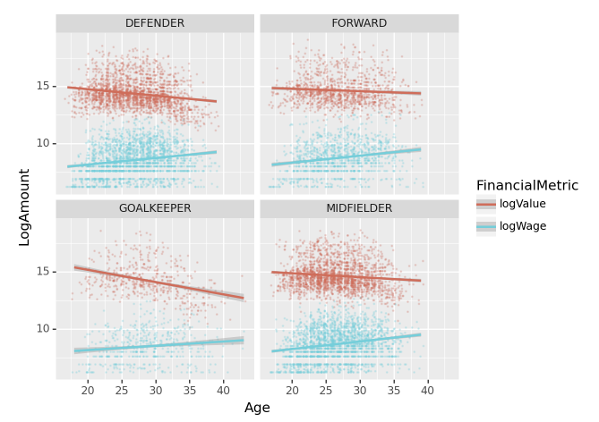
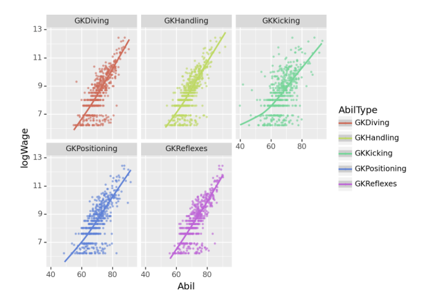

import numpy as np
import pandas as pd
import matplotlib.pyplot as plt
import seaborn as sns
from plotnine import *
#---#
import PIL
import io
import requests
import cv2 09wk-1: 중간고사
plotnine
1. 에너지사용량 – 80점
아래는 2019년 서울의 에너지사용량을 불러오는 예시코드이다.
pd.read_csv('https://raw.githubusercontent.com/guebin/DV2022/main/posts/Energy/Seoul2019.csv')| 지역 | 건물동수 | 연면적 | 에너지사용량(TOE)/전기 | 에너지사용량(TOE)/도시가스 | 에너지사용량(TOE)/지역난방 | |
|---|---|---|---|---|---|---|
| 0 | 종로구 | 17,851 | 9,204,140 | 63,492 | 76,653 | 799 |
| 1 | 중구 | 10,383 | 10,078,848 | 79,223 | 68,210 | 497 |
| 2 | 용산구 | 17,138 | 10,756,612 | 51,229 | 79,805 | 11,128 |
| 3 | 성동구 | 13,980 | 11,804,313 | 59,832 | 99,986 | 0 |
| 4 | 광진구 | 21,556 | 12,272,738 | 68,756 | 123,447 | 0 |
| 5 | 동대문구 | 21,794 | 12,664,554 | 65,913 | 111,420 | 0 |
| 6 | 중랑구 | 23,950 | 15,182,802 | 59,370 | 109,284 | 7,442 |
| 7 | 성북구 | 27,112 | 15,938,807 | 77,007 | 148,376 | 0 |
| 8 | 강북구 | 23,334 | 9,458,987 | 47,731 | 100,045 | 0 |
| 9 | 도봉구 | 13,168 | 10,644,704 | 44,985 | 90,379 | 5,268 |
| 10 | 노원구 | 9,704 | 17,197,086 | 77,010 | 94,340 | 50,859 |
| 11 | 은평구 | 25,200 | 14,735,131 | 75,914 | 130,159 | 14,370 |
| 12 | 서대문구 | 17,651 | 12,559,425 | 65,164 | 111,542 | 6,330 |
| 13 | 마포구 | 18,844 | 15,024,186 | 92,453 | 114,931 | 20,148 |
| 14 | 양천구 | 14,690 | 15,428,339 | 70,721 | 82,857 | 49,258 |
| 15 | 강서구 | 20,446 | 20,641,866 | 86,809 | 128,786 | 35,896 |
| 16 | 구로구 | 17,204 | 13,509,894 | 59,916 | 120,457 | 2,963 |
| 17 | 금천구 | 12,135 | 7,420,441 | 34,791 | 69,814 | 732 |
| 18 | 영등포구 | 18,133 | 14,914,027 | 87,480 | 114,238 | 13,531 |
| 19 | 동작구 | 20,102 | 13,612,946 | 66,811 | 132,285 | 899 |
| 20 | 관악구 | 26,460 | 14,997,859 | 85,416 | 158,543 | 0 |
| 21 | 서초구 | 12,856 | 21,560,285 | 135,491 | 121,437 | 38,866 |
| 22 | 강남구 | 16,129 | 29,961,585 | 180,121 | 149,045 | 83,459 |
| 23 | 송파구 | 19,331 | 26,573,343 | 139,117 | 143,601 | 71,954 |
| 24 | 강동구 | 16,636 | 15,048,315 | 70,341 | 121,931 | 11,921 |
에너지 사용량은 2018년부터 2021년까지의 기간 동안 서울, 부산 등 여러 지역에 대해 정리되어 있으며, 아래 주소 형식으로 저장되어 있다.
https://raw.githubusercontent.com/guebin/DV2022/main/posts/Energy/Seoul2018.csv
https://raw.githubusercontent.com/guebin/DV2022/main/posts/Energy/Seoul2019.csv
https://raw.githubusercontent.com/guebin/DV2022/main/posts/Energy/Seoul2020.csv
https://raw.githubusercontent.com/guebin/DV2022/main/posts/Energy/Seoul2021.csv
...
https://raw.githubusercontent.com/guebin/DV2022/main/posts/Energy/Busan2018.csv
https://raw.githubusercontent.com/guebin/DV2022/main/posts/Energy/Busan2019.csv
https://raw.githubusercontent.com/guebin/DV2022/main/posts/Energy/Busan2020.csv
https://raw.githubusercontent.com/guebin/DV2022/main/posts/Energy/Busan2021.csv아래의 url, prov를 참고하여 모든 자료를 불러온 뒤 pd.concat()을 이용하여 하나의 df로 합쳐라.
url = 'https://raw.githubusercontent.com/guebin/DV2022/main/posts/Energy/{}.csv'
prov = ['Seoul', 'Busan', 'Daegu', 'Incheon',
'Gwangju', 'Daejeon', 'Ulsan', 'Sejongsi',
'Gyeonggi-do', 'Gangwon-do', 'Chungcheongbuk-do',
'Chungcheongnam-do', 'Jeollabuk-do', 'Jeollanam-do',
'Gyeongsangbuk-do', 'Gyeongsangnam-do', 'Jeju-do']의미상 숫자형이지만 문자형으로 입력이된 자료를 모두 전처리하고, 아래의 딕셔너리를 이용하여 열의 이름을 변환하라.
name_dict = {
'년도': 'Year',
'시도': 'Prov',
'지역': 'Reg',
'건물동수': 'BldgCount',
'연면적': 'Area',
'에너지사용량(TOE)/전기': 'Elec',
'에너지사용량(TOE)/도시가스': 'Gas',
'에너지사용량(TOE)/지역난방': 'Heat'
}올바르게 정리된 데이터프레임의 예시는 아래와 같다.

(1) 에너지 사용 추세 – 10점
2018년부터 2021년까지 에너지사용량을 dot-connected plot으로 시각화 하라.
시각화 예시

세부지침
1. plotnine으로 생성된 fig1에 .draw()메소드를 사용하여 matplotlib.figure.Figure 자료형으로 변환할것
1 type이 plotnine.ggplot.ggplot 인 오브젝트
2. 변환된 자료형에 fig.suptitle() method를 사용하여 제목을 설정할것.
(2) 에너지 종류별 사용 추세 – 10점
2018년부터 2021년까지 에너지사용량을 dot-connected plot으로 시각화 하라. 에너지의 유형은 색상으로 구분하라.
시각화 예시

세부지침
1 geom_point의 color와 shape을 EneryType으로 설정할 것.
2 geom_line의 color와 linetype을 EneryType으로 설정할 것
(3) 2020년 대비 2021년의 전기에너지 사용량 증가 – 20점
2020년 대비 2021년의 전기에너지 사용량이 증가한 상위 5개의 지역을 아래와 같이 시각화하라.
시각화 예시

세부지침
1. 2020년 대비 2021년의 전기에너지 사용 증가량은 아래와 같이 구한다.
\[\text{서울의 전기에너지 사용 증가량} = \frac{\text{2021년 강남구의 전기에너지 사용량} + \dots + \text{2021년 중랑구의 전기에너지 사용량}}{\text{2020년 강남구의 전기에너지 사용량} + \dots + \text{2020년 중랑구의 전기에너지 사용량}}\]
2. 전기에너지의 사용량이 증가한 상위5개의 지역 중 가장 많이 증가한 2개의 지역은 색깔과 투명도로 하이라이팅 한다. (구체적 코드는 hint를 참고할 것)
힌트
- 정리된 자료의 형태는 아래와 같아야 한다.

- 그림안에 text를 넣기위해서 geom_text를 시용한다. 위의 데이터가 정리되었다는 전제하에 구체적인 시각화 코드는 아래와 같다.
fig = ggplot(tidydata.query('Rank<5'))
col = geom_col(aes(x='Rank',y='ElecUseInc',fill='Top2',alpha='Top2'))
text = geom_text(aes(x='Rank',y='ElecUseInc',label='Prov'))
fig + col + text + scale_alpha_manual(values={True: 1, False: 0.2})(4) 건물당 에너지 소비량: 연도별 상위 15구 비교 – 20점
건물당 에너지소비량이 가장 큰 15개의 구를 연도별로 시각화하라.
시각화 예시

세부지침
1. 건물당 에너지 사용량(=EUB)을 아래와 같은 방식으로 구할 것
\[\text{EUB}_{강남구,2018}=\frac{\text{강남구의 2018년도 전기에너지 사용량}+ \text{강남구의 2018년도 도시가스 사용량} +\text{강남구의 2018년도 지역난방 사용량}}{\text{강남구의 2018년도 건물동수}}\]
2. 연도별로 EUB가 높은 15개의 구를 정렬할 것. (따라서 매년도마다 순위가 다를수 있음)
(5) 수도권과 비수도권의 전기 에너지 사용량 및 사용 비율 – 20점
수도권과 비수도권의 전기에너지 사용량 및 사용비율을 계산하고 시각화 하라.
시각화예시

세부지침
1. ['Seoul','Gyeonggi-do','Incheon']은 수도권으로 그 외의 지역은 비수도권으로 분리한다.
2. 수도권의 전기에너지 사용비율은 아래와 같이 구한다.
\[\text{2018년 수도권의 전기에너지 사용비율} = \frac{\text{2018년 수도권의 전기 사용량}}{\text{2018년 수도권의 전기 사용량}+\text{2018년 수도권의 도시가스 사용량}+\text{2018년 수도권의 지역난방 사용량}}\]
3. facet_wrap 사용시 scales='free' 옵션을 사용할 것
2. FIFA – 90점
아래는 FIFA22 자료를 불러오는 코드이다.
df = pd.read_csv('https://raw.githubusercontent.com/guebin/DV2021/master/_notebooks/2021-10-25-FIFA22_official_data.csv').drop(['Loaned From','Marking'],axis=1).dropna()
df.head()| ID | Name | Age | Photo | Nationality | Flag | Overall | Potential | Club | Club Logo | ... | SlidingTackle | GKDiving | GKHandling | GKKicking | GKPositioning | GKReflexes | Best Position | Best Overall Rating | Release Clause | DefensiveAwareness | |
|---|---|---|---|---|---|---|---|---|---|---|---|---|---|---|---|---|---|---|---|---|---|
| 0 | 212198 | Bruno Fernandes | 26 | https://cdn.sofifa.com/players/212/198/22_60.png | Portugal | https://cdn.sofifa.com/flags/pt.png | 88 | 89 | Manchester United | https://cdn.sofifa.com/teams/11/30.png | ... | 65.0 | 12.0 | 14.0 | 15.0 | 8.0 | 14.0 | CAM | 88.0 | €206.9M | 72.0 |
| 1 | 209658 | L. Goretzka | 26 | https://cdn.sofifa.com/players/209/658/22_60.png | Germany | https://cdn.sofifa.com/flags/de.png | 87 | 88 | FC Bayern München | https://cdn.sofifa.com/teams/21/30.png | ... | 77.0 | 13.0 | 8.0 | 15.0 | 11.0 | 9.0 | CM | 87.0 | €160.4M | 74.0 |
| 2 | 176580 | L. Suárez | 34 | https://cdn.sofifa.com/players/176/580/22_60.png | Uruguay | https://cdn.sofifa.com/flags/uy.png | 88 | 88 | Atlético de Madrid | https://cdn.sofifa.com/teams/240/30.png | ... | 38.0 | 27.0 | 25.0 | 31.0 | 33.0 | 37.0 | ST | 88.0 | €91.2M | 42.0 |
| 3 | 192985 | K. De Bruyne | 30 | https://cdn.sofifa.com/players/192/985/22_60.png | Belgium | https://cdn.sofifa.com/flags/be.png | 91 | 91 | Manchester City | https://cdn.sofifa.com/teams/10/30.png | ... | 53.0 | 15.0 | 13.0 | 5.0 | 10.0 | 13.0 | CM | 91.0 | €232.2M | 68.0 |
| 4 | 224334 | M. Acuña | 29 | https://cdn.sofifa.com/players/224/334/22_60.png | Argentina | https://cdn.sofifa.com/flags/ar.png | 84 | 84 | Sevilla FC | https://cdn.sofifa.com/teams/481/30.png | ... | 82.0 | 8.0 | 14.0 | 13.0 | 13.0 | 14.0 | LB | 84.0 | €77.7M | 80.0 |
5 rows × 63 columns
아래의 딕셔너리를 이용하여 Position열을 변환하고 물음에 답하라.
position_dict = {
'GOALKEEPER':{'GK'},
'DEFENDER':{'CB','RCB','LCB','RB','LB','RWB','LWB'},
'MIDFIELDER':{'CM','RCM','LCM','CDM','RDM','LDM','CAM','RAM','LAM','RM','LM'},
'FORWARD':{'ST','CF','RF','LF','RW','LW','RS','LS'},
'SUB':{'SUB'},
'RES':{'RES'}
}
position_dict{'GOALKEEPER': {'GK'},
'DEFENDER': {'CB', 'LB', 'LCB', 'LWB', 'RB', 'RCB', 'RWB'},
'MIDFIELDER': {'CAM',
'CDM',
'CM',
'LAM',
'LCM',
'LDM',
'LM',
'RAM',
'RCM',
'RDM',
'RM'},
'FORWARD': {'CF', 'LF', 'LS', 'LW', 'RF', 'RS', 'RW', 'ST'},
'SUB': {'SUB'},
'RES': {'RES'}}(1) 나이와 포지션에 따른 선수 가치 및 급여 분석 – 10점
나이에 따른 선수가치(Value)와 급여(Wage)의 산점도를 포지션별로 시각화 하고 추세선을 그려라.
시각화 예시

세부지침
1. Value와 Wage는 log값을 취하여 시각화 하라.
2. geom_point를 사용할 시alpha=0.2, size=0.1, position='jitter'로 설정하라.
(2) 골키퍼 능력치별 로그급여 추세 – 10점
아래의 리스트는 골키퍼와 관련된 능력치이다.
gkstats = ['GKDiving','GKHandling', 'GKKicking', 'GKPositioning', 'GKReflexes']
gkstats['GKDiving', 'GKHandling', 'GKKicking', 'GKPositioning', 'GKReflexes']gkstats 에 해당하는 능력치와 로그급여(logWage)를 산점도로 시각화하고 추세선을 추가하라.
시각화예시

세부지침
1. 포지션이 “골키퍼”인 선수에 한정하여 시각화 할 것
2. geom_point를 사용할 시 alpha=0.5,size=0.5,position='jitter' 를 설정하라.
(3) “GKAbility”에 따른 골키퍼의 Overall 예측 – 20점
아래의 리스트는 골키퍼와 관련된 능력치이다.
gkstats = ['GKDiving','GKHandling', 'GKKicking', 'GKPositioning', 'GKReflexes']
gkstats['GKDiving', 'GKHandling', 'GKKicking', 'GKPositioning', 'GKReflexes']gkstats 에 해당하는 능력치의 평균을 계산하고 GKAbility라는 변수에 저장하라. 골키퍼 포지션과 공격수 포지션을 가지는 선수들에 한정하여 GKAbility와 OveraAll(=선수의 전반적 능력치)의 관계를 산점도로 시각화하라.
시각화 예시

세부지침
1. ID=212198인 선수 Bruno Fernandes의 경우 GKAbility를 아래와 같이 계산할 수 있다.
\[\text{Bruno Fernandes의 GKAbility} = \frac{\text{Bruno Fernandes의 GKDiving} + \dots + \text{Bruno Fernandes의 GKReflexes}}{5}\]
2. 시각화를 위한 세부옵션은 아래의 코드를 참고하라.
fig = ggplot(tidydata)
point = geom_point(aes(x='GKAbility',y='Overall',size='logWage',alpha='logWage',color='Position'),position='jitter')
smooth = geom_smooth(aes(x='GKAbility',y='Overall'),linetype='dashed')
facet = facet_wrap('Position',scales='free')
fig + point + smooth + facet(4) 포워드와 수비수의 기술별 가치 평가 – 25점
아래는 축구선수의 능력치와 관련이 있는 column들의 리스트이다. (골키퍼 관련 능력치는 제외하였음)
abilities_list = ['Crossing', 'Finishing', 'HeadingAccuracy', 'ShortPassing', 'Volleys', 'Dribbling', 'Curve', 'FKAccuracy', 'LongPassing', 'BallControl', 'Acceleration', 'SprintSpeed', 'Agility', 'Reactions', 'Balance', 'ShotPower', 'Jumping', 'Stamina', 'Strength', 'LongShots', 'Aggression', 'Interceptions', 'Positioning', 'Vision', 'Penalties', 'Composure', 'StandingTackle', 'SlidingTackle']아래는 위의 abilities_list을 적당한 카테고리로 묶은 것이다.
abilities_categories = {
"FinishingSkills": ['Finishing', 'HeadingAccuracy', 'Volleys', 'LongShots', 'Positioning', 'Vision', 'Penalties', 'ShotPower', 'Jumping'],
"BallControl_Passing": ['Dribbling', 'Curve', 'Crossing','ShortPassing', 'LongPassing', 'BallControl','FKAccuracy'],
"Speed_Stamina": ['Acceleration', 'SprintSpeed', 'Agility', 'Stamina'],
"Reactions_PhysicalAttributes": ['Reactions', 'Balance', 'Strength', 'Composure'],
"DefensiveSkills": ['Aggression', 'Interceptions', 'StandingTackle', 'SlidingTackle']
}선수들의 여러 능력치를 abilities_categories에 따라 통합하고 각 스킬 카테고리별로 선수의 능력치의 평균을 구하여 SkillValueCategories값에 저장하라. 정리된 자료의 예시는 아래와 같다.

위의 자료를 바탕으로 SkillValueCategories와 logValue의 산점도를 포지션별로 시각화 하라.
시각화 예시
힌트
- 아래의 데이터프레임에서
마지막 row의 SkillValueCategories의 값은 아래와 같이 구하였다.
\[14.250 = \frac{\text{259646선수의 Aggression}+\dots+\text{259646선수의 SlidingTackle}}{4}=\frac{24+6+14+13}{4} \]
(24+6+14+13)/414.25- 시각화를 위해 아래의 코드를 참고하라.
fig = ggplot(tidydata.query("Position=='FORWARD' or Position=='DEFENDER'"))
point = geom_point(aes(x='SkillValueCategories',y='logValue',color='Position'),alpha=0.05,size=0.05)
smooth = geom_smooth(aes(x='SkillValueCategories',y='logValue',color='Position'))
facet = facet_wrap('SkillTypeCategories')
fig = (fig + point + smooth + facet).draw()
fig.set_dpi(150)
fig.set_size_inches(8,5)
fig(5) 스킬 카테고리별 선수의 로그 연봉 분석 – 25점
공격수 포지션을 가진 선수들의 특정 능력치가 그들의 Value에 얼마나 영향을 주는지 알아보고자 한다. 선수들의 logValue를 10개의 구간으로 나눈 후, 각 구간별로 [‘FinishingSkills’,…,‘DefensiveSkills’]의 통합능력치 평균을 바 플롯(bar plot)으로 시각화하라.
시각화 예시
세부지침
1. logValue는 pd.qcut을 이용하여 분할하고 이때 q=10으로 설정하라.
2. 시각화를 위해 아래의 코드를 사용하라.
fig = ggplot(tidydata.query("Position=='FORWARD'"))
col = geom_col(aes(x='logValueCut',y='SkillValueCategories',fill='logValueCut'),position='dodge')
facet = facet_wrap('SkillTypeCategories')
fig = (fig + col + facet + theme(axis_text_x=element_blank(), axis_ticks=element_blank())).draw()
fig.set_dpi(150)
fig.set_size_inches(8,5)
fig3. 시각화의 해석 – 30점
(1) 심슨의 역설 – 10점
다음은 농구선수 A,B 의 시즌별 자유투 성공률이다.
df = pd.DataFrame({
'Player': ['A','A','A','A','B','B','B','B'],
'Season': [1,1,2,2]*2,
'Status': ['Success','Failure']*4,
'Count': [7,3,None,None,None,None,4,0]
})
df| Player | Season | Status | Count | |
|---|---|---|---|---|
| 0 | A | 1 | Success | 7.0 |
| 1 | A | 1 | Failure | 3.0 |
| 2 | A | 2 | Success | NaN |
| 3 | A | 2 | Failure | NaN |
| 4 | B | 1 | Success | NaN |
| 5 | B | 1 | Failure | NaN |
| 6 | B | 2 | Success | 4.0 |
| 7 | B | 2 | Failure | 0.0 |
적절한 값을 채워 시즌 1,2 모두 B선수의 자유투 성공률이 높지만 시즌1-2를 전체 합치면 A선수의 자유투 성공률이 더 높도록 하라. (즉 적절한 값을 채워 심슨의 역설을 설명하기 위한 자료를 구성하라.) 만들어진 자료를 바탕으로 심슨의 역설을 시각화하라. (즉 시즌별 자유투 성공률과 전체 자유투 성공률을 barplot으로 시각화하라)
(2) Histogram Equalization – 5점
url = 'https://upload.wikimedia.org/wikipedia/commons/thumb/0/08/Unequalized_Hawkes_Bay_NZ.jpg/300px-Unequalized_Hawkes_Bay_NZ.jpg'
img_before = np.array(PIL.Image.open(io.BytesIO(requests.get(url).content)))
img_after = cv2.equalizeHist(img_before)
fig,ax = plt.subplots(2,2)
ax[0,0].imshow(img_before,cmap='gray',vmax=255,vmin=0); ax[0,0].set_title("(a) before: image")
ax[0,1].imshow(img_after,cmap='gray',vmax=255,vmin=0); ax[0,1].set_title("(b) after: image")
ax[1,0].hist(img_before.reshape(-1), bins=255); ax[1,0].set_title("(c) before: histogram")
ax[1,1].hist(img_after.reshape(-1), bins=255); ax[1,1].set_title("(d) after: histogram")
fig.tight_layout()
위의 그림을 올바르게 해석한 사람을 모두 고르라. (모두 맞출 경우만 정답으로 인정)
- 유진: (a) 이미지의 값들은 (b) 이미지의 값들 보다 분산이 작을 것이다.
- 레이: (a) 이미지의 값은 대부분 130~150근처에 모여있어서 회색으로 보인다.
- 원영: 130~150 사이의 값들은 (b) 이미지 보다 (a) 이미지에서 훨씬 많은 빈도로 나타난다.
- 리즈: (a) 이미지를 (b) 이미지로 바꾸는 기법을 histogram equalization 이라고 하며, 그 원리는 (c)와 같은 히스토그램을 (d)와 같은 히스토그램으로 바꾸는 것이다.
답안예시: 유진,레이
(3) 엔스콤의 플랏 – 5점
x = [10, 8, 13, 9, 11, 14, 6, 4, 12, 7, 5]
y1 = [8.04, 6.95, 7.58, 8.81, 8.33, 9.96, 7.24, 4.26, 10.84, 4.82, 5.68]
y2 = [9.14, 8.14, 8.74, 8.77, 9.26, 8.10, 6.13, 3.10, 9.13, 7.26, 4.74]
y3 = [7.46, 6.77, 12.74, 7.11, 7.81, 8.84, 6.08, 5.39, 8.15, 6.42, 5.73]
x4 = [8, 8, 8, 8, 8, 8, 8, 19, 8, 8, 8]
y4 = [6.58, 5.76, 7.71, 8.84, 8.47, 7.04, 5.25, 12.50, 5.56, 7.91, 6.89]
fig, ((ax1,ax2),(ax3,ax4)) = plt.subplots(2,2)
ax1.plot(x,y1,'.')
ax1.set_title("(a)")
ax2.plot(x,y2,'.')
ax2.set_title("(b)")
ax3.plot(x,y3,'.'); ax3.plot(x[2],y3[2],'o',color='C1')
ax3.set_title("(c)")
ax4.plot(x4,y4,'.'); ax4.plot(x4[-4],y4[-4],'o',color='C1')
ax4.set_title("(d)")
fig.suptitle("Anscombe's quartet",size=15)
plt.tight_layout()
위의 그림을 올바르게 해석한 사람을 모두 고르라. (모두 맞출경우만 정답으로 인정)
- 유진: (a)-(d) 모두 양의 상관계수를 가진다.
- 레이: 이 중 상관계수값의 해석이 가장 적절한 자료는 (a)이다.
- 원영: (b)가 적절하지 않은 이유는 선형성이 가정되어 있지 않기 때문이며, (c)가 적절하지 않은 이유는 주황색점으로 표시된 점이 계수값을 크게 바꾸기 때문이다.
- 리즈: (d)의 경우 주황색점의 값 \((x,y)\)을 \((-x,y)\)로 바꾸게 된다면 상관계수의 부호가 음수가 될 것이다.
(4) 아이스크림을 많이 먹으면 걸리는 병 – 5점
df=pd.read_csv('https://raw.githubusercontent.com/guebin/DV2022/master/posts/icecream.csv')
ggplot(data=df.assign(temp=pd.cut(df.temp,[-np.inf,0,5,10,15,20,25,30,np.inf])))\
+geom_point(aes(x='icecream',y='disease',color='temp'))\
+geom_smooth(aes(x='icecream',y='disease',color='temp'))/home/cgb2/anaconda3/envs/ag/lib/python3.10/site-packages/plotnine/stats/smoothers.py:330: PlotnineWarning: Confidence intervals are not yet implemented for lowess smoothings.
/home/cgb2/anaconda3/envs/ag/lib/python3.10/site-packages/plotnine/stats/smoothers.py:330: PlotnineWarning: Confidence intervals are not yet implemented for lowess smoothings.
/home/cgb2/anaconda3/envs/ag/lib/python3.10/site-packages/plotnine/stats/smoothers.py:330: PlotnineWarning: Confidence intervals are not yet implemented for lowess smoothings.
/home/cgb2/anaconda3/envs/ag/lib/python3.10/site-packages/plotnine/stats/smoothers.py:330: PlotnineWarning: Confidence intervals are not yet implemented for lowess smoothings.
/home/cgb2/anaconda3/envs/ag/lib/python3.10/site-packages/plotnine/stats/smoothers.py:330: PlotnineWarning: Confidence intervals are not yet implemented for lowess smoothings.
/home/cgb2/anaconda3/envs/ag/lib/python3.10/site-packages/plotnine/stats/smoothers.py:330: PlotnineWarning: Confidence intervals are not yet implemented for lowess smoothings.
/home/cgb2/anaconda3/envs/ag/lib/python3.10/site-packages/plotnine/stats/smoothers.py:330: PlotnineWarning: Confidence intervals are not yet implemented for lowess smoothings.
<Figure Size: (640 x 480)>아래의 그림을 보고 올바르게 해석한 사람을 모두 고르라. (모두 맞출경우만 정답으로 인정)
그림에 대한 배경설명은 강의노트 “아이스크림을 많이 먹으면 걸리는 병”을 참고
- 원영: (아이스크림 판매량, 소아마비 반응수치)의 상관계수값은 양수이다.
- 가을: 온도를 통제하였을 경우 (아이스크림 판매량, 소아마비 반응수치)의 상관계수값은, 온도를 통제하지 않았을 경우 (아이스크림 판매량, 소아마비 반응수치)의 상관계수 값보다 작다.
- 이서: (온도, 소아마비 반응수치)의 상관계수 값은 양수이다.
- 레이: (온도, 아이스크림 판매량)의 상관계수 값은 양수이다.
- 유진: 온도가 유일한 은닉변수라면, 아이스크림 판매량과 소아마비 반응수치 사이에는 인과성이 없다고 볼 수 있다.
(5) 산점도의 해석들 – 5점
아래는 문제 4에 제시된 산점도와 그 해석들이다. 옳은 해석을 모두 골라라.
답안예시: 해석1,해석2,해석3
4-(1)

해석1: 모든 포지션에 대하여, (Age,logValue)는 음의 상관계수값을 가지며 (Age,logWage)는 양의 상관계수값을 가진다.
4-(2)

해석2: [GKDiving,…,GKReflexes]는 모두 logWage와 양의 상관계수값을 가진다.
4-(3)

해석3: GOALKEEPER 포지션의 경우 GKAbility를 이용하여 Overall을 추정하는 것이 합리적이지만 FORWARD 포지션의 경우 GKAbility를 이용하여 Overall을 추정하는 것은 합리적이지 않다.
4-(4)

해석4: 수비수 포지션의 경우 FinishingSkills 과 logValue 사이의 상관계수 값은 거의 0에 가깝다.